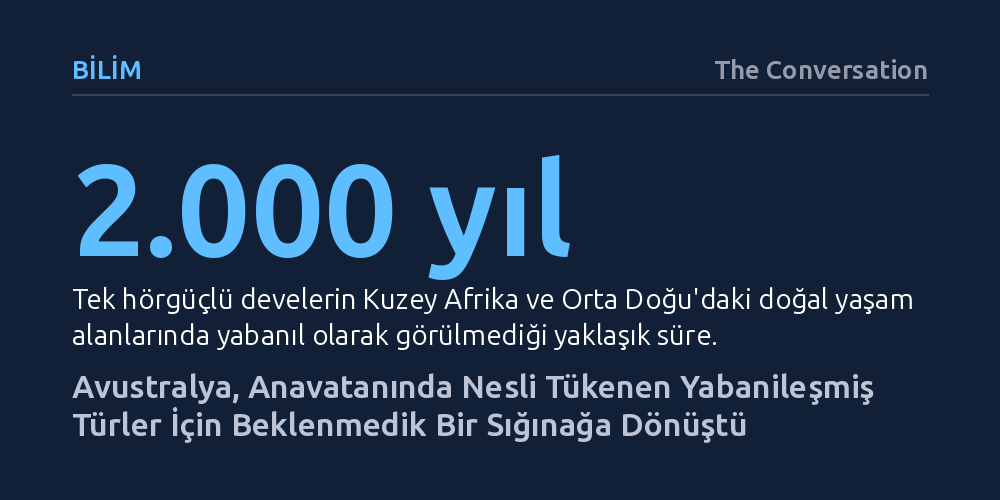

BILIM · The Conversation · 2026-10-20
Avustralya'da zararlı görülüp itlaf edilen deve, banteng ve domuz geyiği gibi yabanileşmiş büyük otoburlar, asıl anavatanlarında tükenme tehlikesi yaşıyor. Araştırmacılar, bu hayvanları toptan yok etmek yerine küresel bir biyoçeşitlilik sigortası olarak koruma altına almayı öneriyor.
İstilacı türlerin mutlak surette yok edilmesi gerektiği yönündeki genel kabulü sarsarak, başka coğrafyalara yerleşen yaban hayvanlarının küresel ölçekte yok oluşu önleyen hayati birer sığınak olabileceğini gösteriyor.

Avustralya kıtasında milyonlarca büyük yaban hayvanı serbestçe dolaşıyor. Domuzlar, develer, geyikler, atlar, mandalar ve keçiler; sömürge döneminde taşımacılık, hayvancılık veya avcılık amacıyla kıtaya bilinçli olarak getirildi. Zaman içinde insan kontrolünden çıkan bu canlılar, kıtanın iç kesimlerinde ve tropikal kuzeyinde devasa yabanıl popülasyonlar kurdu.
Geleneksel doğa koruma anlayışı ve hükümetler, bu hayvanları yerli ekosistemleri tahrip eden zararlılar olarak görüyor. Bitki örtüsünü tüketmeleri, toprağı çiğneyerek erozyona yol açmaları ve kıtaya özgü keseli memelilerle rekabete girmeleri nedeniyle her yıl milyonlarca dolar harcanarak yüz binlercesi zehirleniyor ya da havadan tüfeklerle itlaf ediliyor. Avustralya'nın sömürgeleşmeden bu yana onlarca yerli türünü kaybettiği düşünülürse, yerel türleri koruma çabası haklı bir temele dayanıyor.
Ne var ki bu tabloda gözden kaçırılan çarpıcı bir çelişki bulunuyor: Avustralya'da kontrolsüzce çoğaldığı için yok edilmeye çalışılan bazı türler, asıl anavatanlarında ya tamamen tükenmiş durumda ya da kırmızı listede kritik eşikte bulunuyor. Başka bir deyişle Avustralya, kendi ekosistemi için tehdit saydığı bu canlılar için farkında olmadan yeryüzündeki son sığınak işlevi görüyor.
Bu çelişkinin en belirgin örneği tek hörgüçlü develer. Kuzey Afrika ve Orta Doğu çöllerinde yabanıl deve sürüleri yaklaşık 2.000 yıldır görülmüyor; tür doğada tamamen tükenmiş kabul ediliyor ve yalnızca evcil hayvan olarak varlığını sürdürüyordu. 19. yüzyılda Avustralya'nın kurak iç bölgelerinde yük taşımacılığı için getirilen develer, motorlu taşıtların yaygınlaşmasıyla 20. yüzyıl başında doğaya salındı. Bugün dünyada serbestçe dolaşan tek vahşi tek hörgüçlü deve sürüleri yalnızca Avustralya çöllerinde yaşıyor.
Benzer bir durum Güneydoğu Asya'ya özgü yabanıl bir sığır türü olan banteng için de geçerli. 1840'larda İngilizlerin Darwin yakınlarındaki başarısız bir yerleşim girişiminde et ve süt sağlamak için getirdiği bantengler, koloni terk edilince ardında bırakıldı. Kendi anavatanında aşırı avlanma, yaşam alanı kaybı ve sığır hastalıkları yüzünden nesli kritik tehlike altına giren banteng, Avustralya'nın tropik kuzeyindeki Cobourg Yarımadası'nda zengin ve genetik açıdan saf bir popülasyon oluşturdu.
Tablo bunlarla sınırlı değil. Avustralya'ya getirilen altı geyik türünden üçü küresel ölçekte tehlike altında. 1860'larda Victoria eyaletine av hayvanı olarak salınan domuz geyikleri, ana vatanları Güney ve Güneydoğu Asya'da yok olma sınırına dayanmışken kıtada yaygın varlık gösteriyor. Rusa ve sambar geyikleri de kendi coğrafyalarında hızla gerilerken Avustralya'da güçlü popülasyonlara sahip. Rakamlar genel tabloyu daha da netleştiriyor: Dünyada başka coğrafyalara taşınmış memeli türlerinin yaklaşık beşte biri, 45 kilogramın üzerindeki büyük memelilerin ise neredeyse yarısı kendi evrimleştikleri topraklarda tükenmiş veya tehdit altında bulunuyor.
Avustralya makamları onlarca yıldır bu canlıları tamamen ortadan kaldırmayı hedefleyen yok etme politikaları uyguladı. Ancak geniş bir kıtaya yayılmış, zorlu coğrafyalara adapte olmuş milyonlarca hayvanı tamamen yok etmenin imkânsızlığı artık sahada kabul ediliyor. Bu nedenle koruma stratejileri sessizce 'kökünü kurutma' hedefinden, zararı yerel düzeyde sınırlama ve belirli alanlarda kontrol altında tutma çizgisine kaydı.
Biyologlar, toptan yok etme yaklaşımının yalnızca izole adalarda, çitle çevrili özel koruma alanlarında veya yeni başlayan küçük istilalarda işe yarayabileceğini vurguluyor. Yıllardır yerleşmiş ve kıtaya yayılmış popülasyonlarda ise her yıl yinelenen pahalı itlaf operasyonları kalıcı bir sonuç üretmiyor. Dahası, bu hayvanların ekosistem değişiminin asıl müsebbibi mi yoksa parçalanan habitatların birer yolcusu mu olduğu sorusu giderek daha fazla öne çıkıyor.
İnsan eliyle genişletilen tarım arazileri ve şehirler, doğal alanları bölerek 'uç habitatlar' oluşturuyor. Çiftlik hayvanlarını korumak için kıtanın tepe yırtıcısı olan dingoların sistemli şekilde öldürülmesi, hem yabani hem yerli otoburların besin bolluğu içinde kontrolsüzce çoğalmasına zemin hazırlıyor. Dolayısıyla temel çevresel etkenlere dokunmadan yalnızca hayvanları vurmaya odaklanmak, sorunun kökenini çözmeyen kısır bir döngü yaratıyor.
İstilacı türler tartışması ekoloji çevrelerinde uzun süredir iki uç kutba sıkışmış durumda: Bir taraf yerli ekosistemleri korumak için tüm yabancı türlerin itlaf edilmesi gerektiğini savunurken, diğer taraf değişen dünyada türlerin yok oluşunu önlemek adına her canlının korunmaya değer olduğunu ileri sürüyor. Ancak meseleyi yalnızca 'öldür ya da koru' ikiliğine indirgemek gerçekçi değil.
Örneğin, Batı Avrupa'daki kendi anavatanında nesli tükenme tehlikesinde olan Avrupa ada tavşanı, Avustralya'da tarım arazilerini ve toprağı mahveden devasa bir yıkıma yol açıyor; dolayısıyla kıtada tavşanların koşulsuz korunmasını kimse makul bulmuyor. Buna karşın çevreye benzer bir tahribat vermeyen banteng veya kontrollü deve popülasyonlarının küresel koruma planlarına dahil edilmesi son derece mantıklı bir zemin sunuyor.
Yakın dönemde yapılan araştırmalar, tehlike altındaki yabanileşmiş popülasyonların korunmasının yerel koruma dengelerini altüst etmeyeceğini, sadece belirli coğrafyalara küresel bir kıymet kazandıracağını gösteriyor. Avustralya'yı yalnızca yerel zenginliğini yitiren talihsiz bir toprak parçası olarak görmek yerine, dünyanın geri kalanında yok edilen canlıların ayakta kaldığı beklenmedik bir sığınak olarak değerlendirmek mümkün. Yabanıl tek hörgüçlü develerin ve bantenglerin dünyada özgürce koşabildiği son yer Avustralya olabilir; bu durum doğa korumacılara yeni bir sorumluluk yüklüyor.